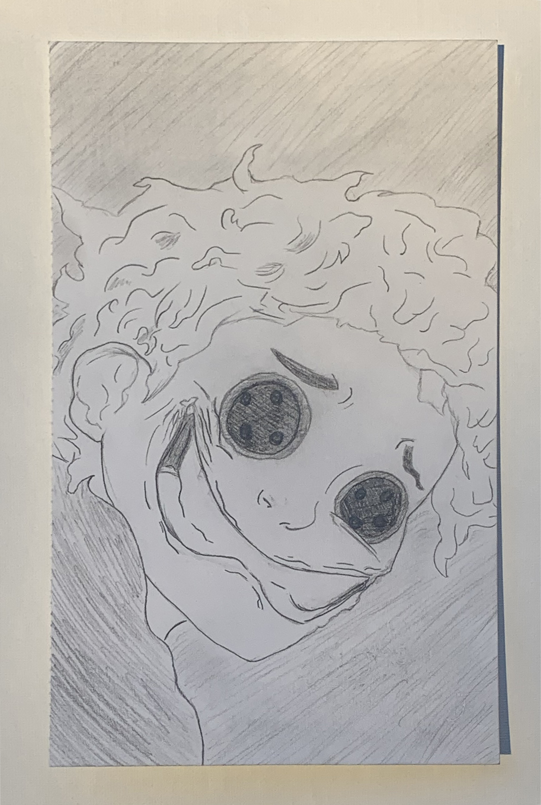

My name is Valerie, I'm an amature artist based in San Antonio, Tx. I began dipping my feet into the art world in elementary school and fell in love ever since. Art for me is an escape and a way to bring joy to others. I've gifted my art on multiple occasions whether it was intentional or not but either way it's seemed to have touched someone. My portfolio is small, I have given away quite a few pieces without even thinking of creating a portfolio and I do admit, I'm not the best, but art isn't a competition and I am my own worst critic, I have many things to learn and if you've come across this site, I hope you find inspiration or can help by giving constructive citicism, which is always welcome! I am open to learning how to use different mediums. If you're a beginner, I'm happy to share some tips that have helped me move along my skill level much quicker over the years. Thanks for stopping by!